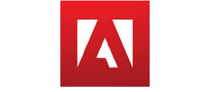

Adobe merkezi ABD'de Kaliforniya eyaletinde bulunan, Dünya'nın 10 büyük grafik ve medya yazılımlarını üreten şirkettir.
2005 yılında Macromedia firmasını satın alarak tasarım pazarında çok daha büyük bir yer edinmiştir. Türkiye'de daha çok Photoshop ve Flash yazılımları ile bilinir.
Adobe merkezi ABD-California’da bulunan uluslararası bir yazılım şirketidir. 2014 yılı itibariyle 13.500 çalışana sahip olan şirketin en ünlü yazılımları Adobe Photoshop ve Adobe Reader programlarıdır. Adobe'nin yine aynı yıla ait verilere göre cirosu yaklaşık olarak 4 milyar dolar civarındadır.
Adobe, 28 Şubat 1982 tarihinde California Eyaleti’nin Mountain View bölgesinde John Warnock ve Charles Geschke tarafından kurulmuştur. Kurulduğundan bu yana değişmeyen şirket ismi Los Altos şehrinden geçen ve aynı zamanda şirketin kurucularının her ikisinin de evlerine komşu olan Adobe Creek adlı akarsudan gelmektedir. Şirketin logosu kendisi de grafiker olan John Warnock’un eşi Marva Warnock tarafından tasarlanmıştır.
Şirketin ilk üretimi vektörel tabanlı grafikler geliştirmek için kullanılan bir yazılım olan Postscript olmuştur. Postscript’in ardından dijital fontlar üzerinde çalışmaya başlayan şirket, Type 1 adını verdiği ürününün patentini aldı. Aynı zamanda Apple’da TrueType ile Adobe’nin rakibi oldu. Bu iki rakipten TrueType daha gelişmiş özellikleri ile öne çıkmış ve Adobe’yi ilk karşılaşma için mağlup etmiştir. Daha sonradan TrueType’ın lisansı Microsoft’a geçmiş fakat Adobe ve Microsoft beraberce OpenType’ı tanıtarak rekabete son vermiştir.
1980’lerin ortalarına gelindiğinde ise Adobe, Apple Macintosh için geliştirdiği vektör tabanlı çizim programı Adobe Illustrator’u tanıtmıştır. Fakat, şirket asıl etkiyi 1989 yılında yine Macintosh için piyasa sürdüğü Photoshop yazılımı ile yapmıştır. Bu tarihten sonra bu alanda Photoshop rakipsiz kalmış ve liderliği günümüze kadar da bırakmamıştır. 1993 yılına gelindiğinde de PDF (Portable Document File) sistemi ile birlikte Adobe Acrobat and Reader tanıtılmıştır. PDF sistemi tüm dünyada genel kabul görmüş ve hatta tescillenmiştir.
Adobe Systems kuruluşundan günümüze kadar birçok başarılı programa imza atmıştır. Bunun yanında piyasada yaygın kullanım alanına sahip yazılımlar üreten şirketlerden bazılarını da bünyesine katmıştır. Bunlardan en önemlisi Macromedia’nın Adobe çatısı altına girmesi olmuştur. 12 Aralık 2005 tarihinde yapılan anlaşma ile Adobe, 3.4 milyar dolar karşılığında Macromedia’yı satın almıştır.Şirketin kurucuları Warnock ve Geschke’nin ardından başkanlık ve CEO’luk görevini Shantanu Narayen devralmıştır.